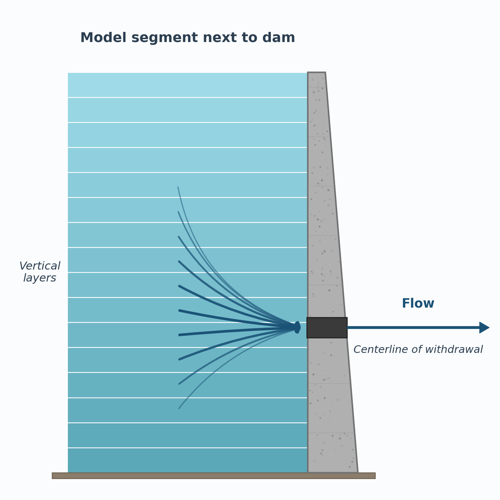

Capabilities and Limitations¶
Capabilities¶
Hydrodynamic¶
The model predicts water surface elevations, velocities (longitudinal and vertical), and temperatures. Temperature is always included in the hydrodynamic calculations because of its effect on water density through the equation of state. Water quality computations are performed after a hydrodynamic computation, allowing for feedback between water quality and hydrodynamic variables.
Lateral Averaging
Even though the model is quasi-3D by the use of model branching, the most significant model limitation is lateral averaging. This does not mean that a 3D model will always perform better than a 2D model, but in some cases a fully 3D model may be necessary to resolve complex three-dimensional flow patterns.
Water Quality¶
Any combination of constituents can be included or excluded from a simulation. The effects of salinity or total dissolved solids (TDS) on density and thus hydrodynamics are included if they are defined as active constituents. The water quality algorithm is modular, allowing constituents to be added as additional subroutines. The current version includes the following water quality state variables in addition to temperature:
Generic Constituents¶
- Any number of generic constituents defined by either or all of the following: zero-order decay rate, first-order decay rate, settling velocity, Arrhenius temperature rate multiplier, volatilization rate, and a photo-degradation rate based on available light. This can be used to define any number of:
- conservative tracer(s)
- bacteria
- toxic contaminant(s)
- Bacteria
- Water age
Dissolved Gases¶
- N₂ gas used in Total Dissolved Gas (TDG) computation
- CH₄
- H₂S
- Dissolved gas pressure
Suspended Solids and Algae¶
- Any number of inorganic suspended solids groups with varying settling rates
- Any number of phytoplankton groups
- Any number of periphyton/epiphyton groups
- Any number of zooplankton groups
- Any number of macrophyte groups
Carbonaceous BOD and Nutrients¶
- Any number of carbonaceous biochemical oxygen demand (CBOD) groups, including
CBOD-NandCBOD-P - Ammonium
- Nitrate+nitrite
- Bioavailable phosphorus (commonly represented by orthophosphate or soluble reactive phosphorus)
- Dissolved oxygen
Organic Matter¶
- Labile dissolved organic matter
- Refractory dissolved organic matter
- Labile particulate organic matter
- Refractory particulate organic matter
- Labile dissolved organic matter-P or as C
- Refractory dissolved organic matter-P or as C
- Labile particulate organic matter-P or as C
- Refractory particulate organic matter-P or as C
- Labile dissolved organic matter-N or as C
- Refractory dissolved organic matter-N or as C
- Labile particulate organic matter-N or as C
- Refractory particulate organic matter-N or as C
Inorganic Chemistry¶
- Total inorganic carbon
- Alkalinity
- FeOOH(s), Fe²⁺, MnO₂(s), Mn²⁺
Sediment Variables¶
- Organic sediments for first-order sediment model
- Organic sediment C
- Organic sediment N
- Organic sediment P
- Sediment NO₃
- Sediment NH₄
- Sediment PO₄
- Sediment and water column CH₄
- Sediment and water column H₂S
- Sediment pH
- Sediment temperature
- Sediment alkalinity
- Sediment and water column SO₄
- Sediment and water column sulfide
- Sediment and water column FeOOH(s)
- Sediment and water column Fe²⁺
- Sediment and water column MnO₂(s)
- Sediment and water column Mn²⁺
- Sediment total inorganic C
- Mature fine tailings (an inorganic suspended solids group)
Derived Variables¶
Additionally, over 60 derived variables can be computed internally from the state variables and output for comparison to measured data. These include pH, total organic carbon (TOC), dissolved organic carbon (DOC), total organic nitrogen (TON), total organic phosphorus (TOP), dissolved organic phosphorus (DOP), total phosphorus (TP), total nitrogen (TN), total Kjeldahl nitrogen (TKN), Secchi disk depth, unionized ammonia, and turbidity.
Long-Term Simulations¶
The water surface elevation is solved implicitly, which eliminates the surface gravity wave restriction on the timestep. This permits larger timesteps during a simulation, resulting in decreased computational time. As a result, the model can easily simulate long-term water quality responses. The vertical diffusion criterion from stability requirements has also been eliminated, allowing for even larger timesteps. Model simulations of multiple decades can be performed within the CE-QUAL-W2 model framework.
Timestep and Numerical Accuracy
Larger timesteps do not guarantee numerical accuracy. Increasing the timestep degrades numerical accuracy. The user should verify that results are not sensitive to the selected timestep.
Head Boundary Conditions¶
The model can be applied to estuaries, rivers, or portions of a waterbody by specifying upstream or downstream head or water level boundary conditions.
Multiple Branches¶
The branching algorithm allows application to geometrically complex waterbodies such as dendritic reservoirs or estuaries.
Multiple Waterbodies¶
The model can be applied to any number of rivers, reservoirs, lakes, and estuaries linked in series. Each waterbody responds to a unique meteorological input file.
Multiple Turbulence Closure Schemes¶
The user can choose from several vertical turbulence closure schemes.
Recommended Turbulence Closure
The k-ε turbulence model is the preferred scheme for estuary, river, and lake/reservoir systems.
Variable Grid Spacing¶
Variable segment lengths and layer thicknesses can be used, allowing specification of higher resolution where needed. Vertical grid spacing can vary in thickness between waterbodies.
Water Quality Independent of Hydrodynamics¶
Water quality can be updated less frequently than hydrodynamics, reducing computational requirements.
Water Quality Is Not Decoupled
Water quality is not decoupled from hydrodynamics. There is not a separate, standalone hydrodynamic code whose output is stored on disk and then used to drive a standalone water quality code. Hydrodynamics and water quality are computed within the same executable.
Auto-Stepping¶
The model includes a variable timestep algorithm that adjusts the timestep to satisfy stability requirements imposed by the numerical solution scheme.
Auto-Stepping Limitations
Auto-stepping does not guarantee numerical stability in all cases, since exact stability criteria cannot be determined a priori. The user should still set a maximum timestep appropriate for the application.
Restart Provision¶
The user can output results during a simulation that can subsequently be used as input. Execution can then be resumed at that point.
Layer/Segment/Branch Addition and Subtraction (Wetting and Drying)¶
The model adjusts surface layer and upstream segment locations, as well as branches, for a rising or falling water surface during a simulation.
Multiple Inflows and Outflows¶
Provisions are made for inflows and inflow loadings from point/nonpoint sources, branches, and precipitation. Outflows are specified either as releases at a branch's downstream segment or as lateral withdrawals. Evaporation can also be computed based on modeled temperatures and meteorological conditions.
Ice Cover Calculations¶
The model can calculate onset, growth, and breakup of ice cover.
Selective Withdrawal Calculations¶
The model can calculate the vertical extent of the withdrawal zone based on outlet geometry, outflow, and density, as shown in Figure 5.

Multiple Hydraulic Structure Algorithms¶
The model can be set up to allow multiple pumps, spillways, pipes, and gates between model segments.
Dynamic Shading¶
The model computes topographic and vegetative shading for each model segment.
Particle Transport¶
The model simulates in a Lagrangian sense the movement of particles in x, y, and z. There are options to use particles for dye studies and for tracking the time history of temperature of a particle released at a fixed time and location.
Automatic Vertical Port Selection in a Reservoir¶
The model can compute what vertical layer to extract water from a reservoir to meet an imposed temperature standard downstream.
Time-Varying Boundary Conditions¶
The model accepts a given set of time-varying inputs at the frequency they occur, independent of other sets of time-varying inputs.
Outputs¶
The model allows considerable flexibility in the type and frequency of outputs. The user can specify what is output, when during the simulation output begins, and the output frequency. A graphical postprocessor is available for plotting and visualization.
Potential Limitations¶
Theoretical¶
Hydrodynamics and transport. The governing equations are laterally and layer averaged. Lateral averaging assumes lateral variations in velocities, temperatures, and constituents are negligible. This assumption may be inappropriate for large waterbodies exhibiting significant lateral variations in water quality. Whether this assumption is met is often a judgment call and depends in large part on the questions being addressed.
Eddy coefficients are used to model turbulence. The user must decide which vertical turbulence scheme is most appropriate for the type of waterbody being simulated. The equations are written in the conservative form using the Boussinesq and hydrostatic approximations. Since vertical momentum is not included, the model may give inaccurate results where there is significant vertical acceleration, but the selective withdrawal algorithms compensate for this in the vicinity of withdrawals.
Water quality. Water quality interactions are simplified descriptions of complex processes. The goal of modeling is to represent these as simply as possible to describe known phenomena. Improvements in these algorithms are often made as needed to describe complexities in the dynamics of the state variables or state variable interactions.
Sediment Oxygen Demand (SOD)
The model includes three approaches for sediment oxygen demand:
- Zero-order model: a user-specified SOD that is not coupled to the water column. SOD varies only with temperature.
- First-order model: a predictive SOD model tied to water column settling of organic matter. This model only represents labile, oxic sediment decay.
- Sediment diagenesis model: a predictive model that simulates kinetics in the sediment and at the sediment-water interface. Because of the complexity of this model, data availability to drive it may be a primary limitation.
Numerical¶
Solution scheme. The model provides three different numerical transport schemes for temperature and constituents:
- Upwind differencing: introduces numerical diffusion often greater than physical diffusion.
QUICKEST(Leonard, 1979): reduces numerical diffusion, but in areas of high gradients may generate overshoots and undershoots that produce small negative concentrations.ULTIMATE: Leonard's solution to the over/undershoots problem. This scheme has been available since Version 3.0 and is the recommended transport scheme.
In addition, discretization errors are introduced as the finite difference cell dimensions or the timestep increase. See References for the Leonard (1979) citation.
Computer limits. A considerable effort has been invested in increasing model efficiency, including a vertically implicit solution for vertical turbulence in the horizontal momentum equation. However, the model still places computational and storage burdens on a computer when making long-term simulations. Year-long water quality simulations for a single reservoir can take from a few minutes to days for multiple waterbodies in a large river basin. Applications to dynamic river systems can take considerably longer than reservoirs because of the much smaller timesteps needed for river numerical stability.
Since the model uses dynamic memory allocation, the memory required for a simulation is determined at run-time. In most cases the memory requirements of CE-QUAL-W2 are minimal since the model opens input files and reads them record-by-record as needed rather than reading them all into memory at the beginning of the model run.